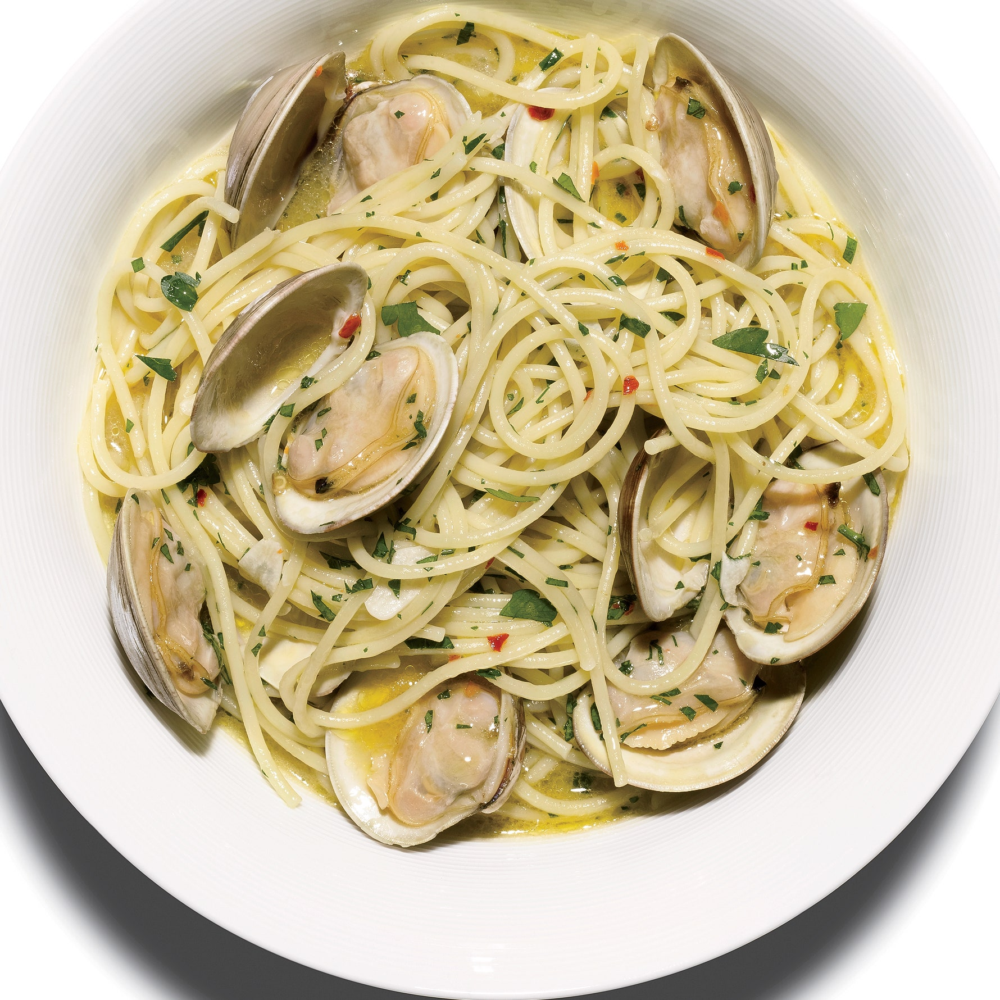

PASTA ALLE VONGOLE

This is a classic italian recipe that will immediately transport you to the beautiful views of the Amalfi coast!
WHAT YOU NEED
- 500 grams of pasta, preferably linguine
- 2 kilos of fresh clams
- 5 cloves of garlic
- A big bunch of italian parsley
- 200 ml of white wine
- A quarter of a lemon
- Extra virgin olive oil
- Salt and pepper to taste
These amounts will feed 4 people
WHAT YOU DO
-
Put the clams in salted water for 2 hours minumum, so that they can release the sand they have inside.
-
In a big pot on medium-high heat, drizzle a generous amount of olive oil along with the cloves of garlic and the parsley stems.
-
In another pot, put some water to boil and then add a handful of salt.
-
Let the garlic brown, then quickly add the clams along with the white wine and close the lid on the pot.
-
Keep the lid closed for 2-3 minutes, as the heat inside the pot will open the clams. If your lid is see-through you will be able to admire this gorgeous process!
-
After most of the clams have opened, kill the heat and strain them keeping all the liquid from the pot. This is a crucial step, as this liquid will be the base for our amazing pasta sauce!
-
In the second pot, as the water is salted and boiling, add your pasta and cook for 2 minutes less than package indications.
-
In a shallow pan, add the garlic you retrieved from the pot along with some olive oil on low-medium heat.
-
While the pasta and the garlic are going, finely chop some parsley and prepare your quarter lemon.
-
When the pasta is 2 minutes from being done, strain it (keeping some of the pasta water!) and add it the pan with the garlic, raising the heat to high.
-
Remember the liquid from the clams we saved? It's time to add it to the pasta to finish cooking it adding some of the water we kept if necessary.
-
When the pasta is done, kill the heat, add the clams, the parsley and the juice of the lemon, saltand pepper to taste, toss the pasta in the pan like a true italian chef and Voilà! Your pasta is ready! Enjoy!
BACK TO THE HOMEPAGE